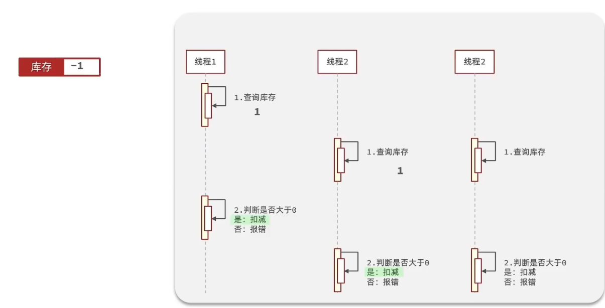

优品抢购项目复习
项目架构：
一. 短信登录功能
短信登录功能业务分析：
顾名思义，我们要实现两部分功能：短信+登录。
不同于传统的基于session的登录方式，由于大型项目要部署到服务器集群中去，每个服务器都有独立的Tomcat去运行项目，那么传统的基于session的登录方式会出现“共享session问题”，服务器之间的session不能共享，当请求切换到不同tomcat服务时会导致数据丢失的问题。与此同时，假如解决了数据丢失问题，在服务器集群模式下运行项目，需要在每台服务器上都配上一个session来存储用户信息，这样会造成空间资源的浪费，而基于redis缓存的登录功能，不仅不会出现这些问题，还会更加安全可靠。
基于redis实现共享session短信登陆
发送短信功能
流程概述：
用户在前端点击发送验证码，前端将用户填写的手机号提交到后端进行验证，如果验证失败，则返回错误信息。验证成功，后端生成验证码，这个验证码保存到redis中去，设定2min过期时间。然后向用户发送验证码。
关于redis数据结构的选择：
简单的String类型即可。
关于key的选择：
- 唯一性保证：鉴于手机号是独一无二的标识，所以选取
prefix + 用户phone作为key。
- 唯一性保证：鉴于手机号是独一无二的标识，所以选取
流程图：
代码：
1
2
3
4
5
6
7
8
9
10
11
12
13
14
15
16
public Result sendCode(String phone, HttpSession session) {
//1. 校验手机号
boolean phoneInvalid = RegexUtils.isPhoneInvalid(phone);
if(phoneInvalid){
return Result.fail("手机号输入有误");
}
//2. 生成验证码
String code = RandomUtil.randomNumbers(6);
//3. 保存验证码到redis
stringRedisTemplate.opsForValue().set(LOGIN_CODE_KEY + phone, code, LOGIN_CODE_TTL, TimeUnit.MINUTES);
//4. 发送验证码
log.info("发送验证码成功,为{} ",code);
return Result.ok();
}
用户登录功能
流程概述：
用户收到验证码后，填写完验证码，点击登录按钮，前端将 手机号+验证码 组合发送到后端进行校验。
后端先校验手机号格式的正确性，再校验验证码。验证失败就返回错误信息，假如验证成功，根据手机号从数据库查询用户的信息，（如果查询不到，说明用户是第一次登录，直接给他注册了。）然后把用户的部分信息（UserDto）存储到redis，方便用户接下来访问其它页面时自动校验身份。
redis数据结构选择：
要存储的用户信息是封装在JSON字符串里的，数据也是键值对类型，可以选取redis的hash结构存储。
key的选择：
唯一性保证：
只要用户登录以后，前端会把这个key放在请求header的“authorization”里，之后该用户的每一次请求都会携带这个属性，为了防止用户信息泄露，这里不使用用户的信息作为key，选择随机生成的token，prefix + token 为key
生成token工具：UUID
流程图：
代码：
1
2
3
4
5
6
7
8
9
10
11
12
13
14
15
16
17
18
19
20
21
22
23
24
25
26
27
28
29
30
31
32
33package com.vls.service.impl;
public Result login(LoginFormDTO loginForm, HttpSession session) {
// 校验手机号，
if(RegexUtils.isPhoneInvalid(loginForm.getPhone())){
return Result.fail("手机号格式错误");
}
//校验验证码
String code = stringRedisTemplate.opsForValue().get(LOGIN_CODE_KEY + loginForm.getPhone());
if(code == null || !loginForm.getCode().equals(code)){
return Result.fail("验证码错误");
}
//根据手机号查询用户
User user = query().eq("phone", loginForm.getPhone()).one();
//用户不存在，创建新用户
if(user == null){
user = createUserWithPhone(loginForm.getPhone());
}
//保存用户信息到redis
//随机生成token作为令牌
String token = UUID.randomUUID().toString(true);
//将user对象转为Dto对象并转为hash存储
UserDTO userDTO = BeanUtil.copyProperties(user, UserDTO.class);
//UserDto转 map
Map<String, Object> map = BeanUtil.beanToMap(userDTO,
new HashMap<>(),
CopyOptions.create().setFieldValueEditor((filedName, filedValue) -> filedValue.toString()));
//设置有效期30min,
stringRedisTemplate.opsForHash().putAll(LOGIN_USER_KEY + token, map);//long 转string类型会出错。
stringRedisTemplate.expire(LOGIN_USER_KEY + token, 30, TimeUnit.MINUTES);
return Result.ok(token);
}bug分析：
逻辑bug：用户在线时间过长会被踢出系统：
问题描述：redis设置了过期时间30min，不论用户在不在线，30min后，用户的登录信息会被redis自动清除掉，也就是说用户会被强制退出。
解决：更改拦截器的preHandle方法，刷新token的有效期。因为用户每访问一次拦截器拦截的路径时，都会触发这个方法。
测试异常bug：
map里，如果单纯的用Map<String, Object> map = BeanUtil.beanToMap(userDTO）会出现long不能转string这个bug。
原因：采用的stringRedisTemplate这个RedisTemplate子类，要求存入的每个值都要是String类型，而userDto里的id是long类型。
解决：beanToMap方法的第三个参数，自定义复制规则。
1
2Map<String, Object> map = BeanUtil.beanToMap(userDTO, new HashMap<>(), CopyOptions.create().setFieldValueEditor((filedName, filedValue) -> filedValue.toString()));
拦截器导入redis工具类：
1
2
3
4
5private StringRedisTemplate stringRedisTemplate;
//手动创建的类，没有依赖注入，需要通过构造函数的方式，注入redis
public RefreshLoginInterceptor(StringRedisTemplate stringRedisTemplate) {
this.stringRedisTemplate = stringRedisTemplate;
}
校验登录状态
流程分析：
用户访问前端页面的时候，前端会发出请求（包含token信息）进行用户登录状态校验。如果校验失败，会拦截这次请求，让用户重新登录。
流程图：
核心代码：
与下面RefreshLoginInterceptor拦截器的代码一致。
解决登录状态刷新时的问题
问题描述：
SpringMVC提供的拦截器几乎是系统中必备组件，在WebMvcConfig中会设置拦截器放行的路径。然而我们redis设置的用户token过期时间为30min，假设用户一直访问这些放行页面，时间一到用户还是会被踢出系统。
解决思路：
双拦截器策略：一个拦截一切的路径，保证redis里用户的token刷新。一个只拦截需要拦截的路径。
代码：
LoginInterceptor
1
2
3
4
5
6
7
8
9
10
11
12
13
14
15
16
17
18
19public class LoginInterceptor implements HandlerInterceptor {
public boolean preHandle(HttpServletRequest request, HttpServletResponse response, Object handler) throws Exception {
//判断是否需要拦截：
UserDTO user = UserHolder.getUser();
if(user == null){
response.setStatus(401);
return false;
}
return true;
}
public void afterCompletion(HttpServletRequest request, HttpServletResponse response, Object handler, Exception ex) throws Exception {
UserHolder.removeUser();
}
}RefreshLoginInterceptor
1
2
3
4
5
6
7
8
9
10
11
12
13
14
15
16
17
18
19
20
21
22
23
24
25
26
27
28
29
30
31
32
33
34
35
36
37
38
39public class RefreshLoginInterceptor implements HandlerInterceptor {
private StringRedisTemplate stringRedisTemplate;
//手动创建的类，没有依赖注入，需要通过构造函数的方式，注入redis
public RefreshLoginInterceptor(StringRedisTemplate stringRedisTemplate) {
this.stringRedisTemplate = stringRedisTemplate;
}
public boolean preHandle(HttpServletRequest request, HttpServletResponse response, Object handler) throws Exception {
//获取请求头的token
String token = request.getHeader("authorization");
if(StrUtil.isBlank(token)){
return true;
}
String key = LOGIN_USER_KEY + token;
//基于token获取redis用户信息
Map<Object, Object> userMap = stringRedisTemplate.opsForHash()
.entries(key);
//判断用户是否存在
if(userMap.isEmpty()){
return true;
}
//查询到的hash数据转化为userDto
UserDTO userDTO = BeanUtil.fillBeanWithMap(userMap, new UserDTO(), false);
//保存到ThreadLocal
UserHolder.saveUser(userDTO);
//刷新token有效期
stringRedisTemplate.expire(key, 30, TimeUnit.MINUTES);
return true;
}
public void afterCompletion(HttpServletRequest request, HttpServletResponse response, Object handler, Exception ex) throws Exception {
UserHolder.removeUser();
}
}WebMVCConfig
1
2
3
4
5
6
7
8
9
10
11
12
13
14
15
16
17
18
19
20
21
22
23
24
public class WebMVCConfig implements WebMvcConfigurer {
private StringRedisTemplate stringRedisTemplate;
public void addInterceptors(InterceptorRegistry registry) {
registry.addInterceptor(new RefreshLoginInterceptor(stringRedisTemplate)).order(0);
//order设置优先级，越小优先级越大
registry.addInterceptor(new LoginInterceptor()).
excludePathPatterns(
"/user/login",
"/user/code",
"/blog/hot",
"/shop/**",
"/shop-type/**",
"/upload/**",
"/voucher/**"
).order(1);
}
}
二.商户查询缓存
缓存的概念：
缓存就是数据交换的缓冲区，又称cache，是存储数据的临时区。读写性能很高。
例如，CPU与磁盘数据进行交换的中间缓冲区就叫cache。
缓存的作用：
- 降低后端负载。
- 提高读写性能，降低响应时间
缓存的维护成本
- 数据一致性成本
- 代码维护成本
- 运维成本
缓存的简单作用模型：
商户查询缓存业务分析
商户缓存，代指用户访问前端页面时，浏览商家的商品等相关信息。而这些信息有一个共性：那就是需要重复访问多次。倘若每一次访问都要从数据库获取信息，那么当用户量多起来，可能数据库会爆炸。于是乎，我们需要将这些信息，统一存储在中间件里。
基本的添加商户缓存&缓存更新策略
添加商户缓存
流程分析：
代码：

缓存更新策略
概念：
redis的内存也不是无穷无尽的，缓存更新策略是redis为了节约内存设计出来的一种模式，主要因为内存空间很宝贵，假如向redis插入太多数据，redis会对部分数据进行更新（淘汰）。
淘汰的策略：
- 内存淘汰：
- 说明：无需自己维护，利用redis的内存淘汰机制，内存不足时自动淘汰一部分数据，等到下次查询时，再更新缓存
- 一致性：差
- 维护成本：0
- 超时剔除：
- 说明：给缓存数据增加TTL时间，时间到了，这些数据会自动被redis清除掉，下次查询时更新缓存
- 一致性：一般
- 维护成本：低
- 说明：给缓存数据增加TTL时间，时间到了，这些数据会自动被redis清除掉，下次查询时更新缓存
- 主动更新：
- 说明：通过开发人员自行编写业务逻辑，修改数据库的同时，更新缓存。
- 一致性：很好
- 维护成本：高
- 更新策略：
- Cache Aside Pattern 人工编码方式：缓存调用者在更新完数据库后再去更新缓存，也称之为双写方案
- Read/Write Through Pattern : 由系统本身完成，数据库与缓存的问题交由系统本身去处理
- Write Behind Caching Pattern ：调用者只操作缓存，其他线程去异步处理数据库，实现最终一致
- 说明：通过开发人员自行编写业务逻辑，修改数据库的同时，更新缓存。
- 内存淘汰：
业务场景：
- 低一致性需求:使用内存淘汰机制。例如店铺类型的查询缓存
- 高一致性需求:主动更新，并以超时剔除作为兜底方案。例如店铺详情查询的缓存
缓存更新策略介绍完毕，回到业务，假如商户缓存有变，怎么样能让缓存与数据库同步：
删除缓存还是更新缓存？
- 更新：代码书写比较冗余，且一致性较差
- 删除：更新数据库时让缓存失效，查询时再更新缓存，一致性较强。
缓存与数据库的操作同时成功或失败？
- 事务方案
先更新数据库还是先删除缓存？
先删除缓存，再操作数据库
该方式，由于删除缓存后，更新数据库，而更新数据库的时间略久，如果这段时间有其它线程访问，从数据库查询的数据还是脏数据，那么写入缓存的还是脏数据，而且这种情况发生概率略大。
先操作数据库，再删除缓存
假设线程2要更新，正常情况下：
非正常情况，但是发生概率很低。因为还需要当线程1来查询的时候，缓存恰好失效。线程1查询、线程2修改：
步骤拆解分析：
缓存刚好失效
请求A查询数据库，得一个旧值
请求B将新值写入数据库
请求B删除缓存
请求A将查到的旧值写入缓存
就是说，写数据库那个线程，写入的速度够快，快到比另一个读线程读的速度还快，才能让写入缓存这一动作快于读线程的写入缓存动作，但事实上写操作几乎慢于读操作。因此上述这个极端情况很少发生
读写操作：
读操作:
缓存命中则直接返回
缓存未命中则查询数据库，并写入缓存，设定超时时间
写操作:
先写数据库，然后再删除缓存·
要确保数据库与缓存操作的原子性
缓存穿透
客户端请求的数据，既不在缓存中，也不在数据库里，这样的话请求穿透过缓存直接发到了数据库。如果一直这样请求，数据库会难以承担压力。
解决方案：
缓存空对象：即使这个数据在数据库中也不存在，我们也把这个数据存入到redis中去，这样，下次用户过来访问这个不存在的数据，那么在redis中也能找到这个数据就不会进入到缓存了
- 优点：实现简单
- 缺点：
- 额外的空间开销
- 假如这个缓存的空对象，其真实数据真的在数据库里创建了，那么如果缓存里的这个对象TTL时间还没到，用户就会读取到脏数据。
布隆过滤：
布隆过滤器其实采用的是哈希思想来解决这个问题，通过一个庞大的二进制数组，走哈希思想去判断当前这个要查询的这个数据是否存在，如果布隆过滤器判断存在，则放行，这个请求会去访问redis，哪怕此时redis中的数据过期了，但是数据库中一定存在这个数据，在数据库中查询出来这个数据后，再将其放入到redis中，假设布隆过滤器判断这个数据不存在，则直接返回。
编码解决商品查询的缓存穿透问题
在基本的添加商户缓存上更改：
流程分析：前端发出请求，从redis查询商铺的缓存，如果redis命中，直接返回（无论是否为空值）。如果redis未命中，到数据库查询，如果查询到的结果是空值，将空值写入redis，并返回空值。如果数据库存在这个数据，就正常写到redis缓存，返回给前端即可
流程图：
代码：
ShopServiceImpl：
1
2
3
4
5
6
7
8
9
10
11
12
13
14
15
16
17
18
19
20
21
22
23
24
25
26
27
public Result queryById(Long id) {
//从redis查缓存
String shopJson = stringRedisTemplate.opsForValue().get(RedisConstants.CACHE_SHOP_KEY + id);
//查到直接返回
if(StrUtil.isNotBlank(shopJson)){
Shop shop = JSONUtil.toBean(shopJson, Shop.class);
return Result.ok(shop);
}
//没查到，说明shopJSON要么是空字符串要么是null
//判断命中的值是否是空值
if(shopJson != null){
return Result.fail("店铺不存在");
}
//redis没有，直接去数据库查
Shop shop = this.getById(id);
//数据库没有，空值写入redis防止缓存穿透
if(shop == null){
//**空值写入redis
stringRedisTemplate.opsForValue().set(RedisConstants.CACHE_SHOP_KEY + id, "",2, TimeUnit.MINUTES);
return Result.fail("店铺不存在");
}
//数据库有就返回,并写入redis
stringRedisTemplate.opsForValue().set(RedisConstants.CACHE_SHOP_KEY + id, JSONUtil.toJsonStr(shop),30, TimeUnit.MINUTES);
return Result.ok(shop);
}
redission布隆过滤器解决缓存穿透
哈希函数的特点：
- 根据同一个哈希函数得到的哈希值不同，那么这两个哈希值的原始输入值肯定不同——单向散列函数
- 根据同一个哈希函数得到的两个哈希值相等，两个哈希值的原始输入值有可能相等，有可能不相等
布隆过滤器优点：
- 亿级数据轻量存储
关键函数：
- 可以根据我们期望的存储数量，以及期待的误判率，估值出一个合适大小的二进制数组
- 可以根据我们期望的存储数量，以及期待的误判率，估值出几个哈希函数
1 | /** |
具体实现：
1、配置redission
2、书写bloomFilterUtil
1 |
|
3、项目启动初始化布隆过滤器
ShopServiceImpl
1 | // 项目启动的时候执行该方法，也可以理解为在spring容器初始化的时候执行该方法 |
4、修改查询逻辑
1 |
|
- 即使有误判率，误判后的数据也能添加一个空缓存防止反复查询该数据。
缓存雪崩
缓存雪崩是指在同一时段大量的缓存key同时失效或者Redis服务宕机，导致大量请求到达数据库，带来巨大压力。
解决方案：
给不同的Key的TTL添加随机值
利用Redis集群提高服务的可用性
- 缺陷：redis机房爆炸，无法挽回
给缓存业务添加降级限流策略
给业务添加多级缓存
- nginx添加缓存
缓存击穿（热点key问题）
一个经常被高并发访问并且重建缓存过程缓慢的key，突然失效，导致某个时间点，大量的请求同时访问数据库，造成巨大压力。
多线程环境下，假设线程1查询缓存之后，发现缓存过期，然后应该去数据库里查询，但是此时，有n多个其它线程在线程1查询数据库时刻查询缓存，结果都没查到，那么这n多个线程都要去访问数据库，重建缓存。
解决方案：
互斥锁：
线程并发问题最容易想到的解决方法：加锁。这样线程就会一个个执行查询的步骤。但同样，并行程序变成串行，查询性能会大幅度下降。
综合考虑，我们选用tryLock方法 + 双检（double check）来解决。
假设线程1这时候进来，查询缓存未命中，然后尝试获取锁，获取锁成功之后，去查询数据库。此时线程2同时过来，查询缓存也没有，然后尝试获取锁，但此时锁在线程1这，于是线程2获取锁失败，休眠一段时间，重试。然后等到线程1把锁释放，线程2尝试获得锁成功，开始执行。
逻辑过期：
本质原因：我们设置了过期的时间TTL，假设没有这个过期时间，那么redis里就会永远存在这个key，这样就不会出现缓存击穿的问题。但是又会出现：缓存永远清除不掉，占用内存。
逻辑过期就是用来解决这些问题。
设置缓存的时候，在value域再加上一个过期时间（时间戳）字段。这个时间不会直接作用于这个缓存本身。后续根据我们编写的逻辑进行处理。
假设线程1查询缓存，从value中判断，时间已经过期,这时候，线程1获得互斥锁，线程1开启额外的线程去处理这个过期数据（查询数据库重建缓存），而其它的线程来访问，尝试获取锁，获取锁失败以后，得到的是未修改的旧数据。（这就是平常浏览页面所谓的：多刷新几次就有修改后的数据了）。
两种解决方案的对比：
互斥锁解决缓存击穿
流程分析：前端带着商户id请求，先从缓存中查询，若命中，判空，返回。未命中，有两种情况，要么这个数据是null，要么是空字符串，如果是空字符串，就有缓存穿透嫌疑，直接返回null即可。如果是null，说明这个数据过期了，那要解决缓存击穿问题。
缓存击穿解决：
线程尝试获取互斥锁，如果获取锁失败，线程休眠一段时间后重新尝试获取锁（递归调用）。获取锁成功以后，从数据库里查数据，如果查的数据为空，为防止缓存穿透，把空值弄到缓存里。查到数据了，就存入redis，解锁，返回。
流程图：
代码：
1
2
3
4
5
6
7
8
9
10
11
12
13
14
15
16
17
18
19
20
21
22
23
24
25
26
27
28
29
30
31
32
33
34
35
36
37
38
39
40
41
42
43
44
45
46
47
48
49
50
51
52
53public Shop queryWithMutex(Long id) {
//从redis查缓存
String shopJson = stringRedisTemplate.opsForValue().get(RedisConstants.CACHE_SHOP_KEY + id);
//命中直接返回
if(StrUtil.isNotBlank(shopJson)){
return JSONUtil.toBean(shopJson, Shop.class);
}
//没查到，说明shopJSON要么是空字符串要么是null 这里是由于isNotBlank的特性。
//判断命中的值是否是空值
if(shopJson != null){
return null;
}
//缓存重建
//尝试获取互斥锁
String lockKey = RedisConstants.LOCK_SHOP_KEY + id;
Shop shop = null;
try {
boolean lock = tryLock(lockKey);
//判断是否获取成功
if(!lock){
Thread.sleep(50);
//递归重来
return queryWithMutex(id);
}
//获取成功
//redis没有，直接去数据库查
shop = this.getById(id);
//数据库没有，空值写入redis防止缓存穿透
if(shop == null){
//**空值写入redis
stringRedisTemplate.opsForValue().set(RedisConstants.CACHE_SHOP_KEY + id, "",2, TimeUnit.MINUTES);
return null;
}
//数据库有就返回,并写入redis
stringRedisTemplate.opsForValue().set(RedisConstants.CACHE_SHOP_KEY + id, JSONUtil.toJsonStr(shop),30, TimeUnit.MINUTES);
} catch (InterruptedException e) {
throw new RuntimeException();
} finally {
//释放锁
unLock(lockKey);
}
return shop;
}
private boolean tryLock(String key){
Boolean flag = stringRedisTemplate.opsForValue().setIfAbsent(key, "1", 10, TimeUnit.SECONDS);
return BooleanUtil.isTrue(flag);//拆箱，防止空指针异常
}
private void unLock(String key){
stringRedisTemplate.delete(key);
}
逻辑过期解决缓存击穿问题
数据结构：
由于逻辑过期新加了一个字段：到期日期的时间戳，我们有两种方式去扩展entity类（shop）。
- 继承
- 比较局限，entity类多起来，会书写很多冗余代码
- 工具类RedisData
- 字段Object data （存放数据信息，复用性很强）
- 字段：expire 到期时间的时间戳
- 继承
流程分析：前端请求，后端线程开始执行，从redis是必能查到数据的，然后我们需要把这个从redis获得的json数据转化成RedisData类型。然后通过现在的时间判断是否过期，未过期直接返回数据。
如果过期了，当前线程尝试获取锁，如果获取锁了，则利用线程池对象提交任务（查询数据库重建缓存），然后直接返回旧数据。
其它线程进来，获取不到锁，那就返回旧数据。
流程图：
代码：
保存redisData到redis
1
2
3
4
5
6
7public void saveShop2Redis(Long id, Long expireSeconds){
Shop shop = getById(id);
RedisData redisData = new RedisData();
redisData.setData(shop);
redisData.setExpireTime(LocalDateTime.now().plusSeconds(expireSeconds));//当前时间往后推几秒是过期时间
stringRedisTemplate.opsForValue().set(RedisConstants.CACHE_SHOP_KEY + id, JSONUtil.toJsonStr(redisData));
}queryWithLogicalExpire
1
2
3
4
5
6
7
8
9
10
11
12
13
14
15
16
17
18
19
20
21
22
23
24
25
26
27
28
29
30
31
32
33
34
35public Shop queryWithLogicalExpire(Long id) {
//从redis查缓存
String shopJson = stringRedisTemplate.opsForValue().get(RedisConstants.CACHE_SHOP_KEY + id);
//未命中直接返回null(其实是默认命中，因为设限时期无限)
if(StrUtil.isBlank(shopJson)){
return null;
}
//命中：判断缓存信息是否过期
//反序列化获得redisData对象
RedisData redisData = JSONUtil.toBean(shopJson, RedisData.class);
JSONObject shopData = (JSONObject)redisData.getData();
Shop shop = JSONUtil.toBean(shopData, Shop.class);
//查看数据是否过期
if(!redisData.getExpireTime().isAfter(LocalDateTime.now())){
return shop;
}
//过期了，缓存重建，尝试获取互斥锁
boolean tryLock = tryLock(RedisConstants.LOCK_SHOP_KEY + id);
//查看是否获取锁
//获取锁了，开启独立线程,查数据库,注意，这里还要检查缓存是否存在
if(tryLock){
//利用线程池。
CACHE_REBUILD_EXECUTOR.submit(() ->{
try {
this.saveShop2Redis(id,20L);
//释放锁
} catch (Exception e) {
throw new RuntimeException(e);
}finally {
unLock(RedisConstants.LOCK_SHOP_KEY + id);
}
});
}
return shop;
}
加锁解锁的逻辑
利用redis的String数据结构里的SETNX命令：
SETNX︰添加一个string类型的键值对，前提是这个key不存在，否则不执行
这个key存在时就相当于加锁。
代码：
1 | private boolean tryLock(String key){ |
三.优惠券秒杀
全局唯一id
每个店铺都可以发布优惠券：
当用户抢购时，就会生成订单并保存到tb_voucher_order这张表中，而订单表如果使用数据库自增ID就存在一些问题：
- id的规律性太明显
- 受单表数据量的限制
场景分析：
- 如果id规律性明显，就会间接透漏一些敏感信息。比如，一天之内卖了多少单优惠券等等（拿自增id做个差值就能得到）。
- 随着业务的扩大，订单表的数据量会大幅度上升，以后肯定要分库分表操作，但是这些表逻辑上是一个表，如果id自增，这样每个表的订单的id都是一样的，逻辑上会出现重复的订单。
解决策略：我们后端人员主动写一个全局id生成器，为每个订单生成独一无二的id。
redis全局ID生成器：在分布式系统下用来生成全局唯一ID的工具，
特性：
唯一性
安全性：在redis里有一个自增的命令，但是为了安全起见，不直接采用自增，我们拼接上其它信息：
递增性
高可用
时间戳：31bit，以秒为单位，可以使用69年
序列号：32bit，秒内的计数器，支持每秒产生2^32个不同ID
高性能
生成id的思路：
- 获取时间戳：首先拿当前时间减去业务开始的时间，作为时间戳。
- 获取序列号：根据key存入redis，设置自增。注意key的取值：我们业务设置统计一天的订单数量，那就记录一下当前的时间戳，精确到天，加到key的尾缀上。
- 组合时间戳和序列号，利用位运算，时间戳左移32位，然后与序列号进行或运算，相当于加上序列号，效率更高。
redis实现代码：
时间戳是从当前时间开始，我们先简单取一下：
1 | public static void main(String[] args) { |
把这个获得的时间戳，定义为BEGIN_TIMESTAMP放在RedisIdWorker类中。
工具类里定义RedisIdWorker类：
1 |
|
countdownlatch测试代码
关于countdownlatch：
名为信号枪，作用是同步协调多线程的唤醒与等待过程。在多线程中，程序是异步执行的，我们希望分线程先走完，然后再走完主线程。
重要方法：
1、countDown
2、await
await 方法 是阻塞方法，我们担心分线程没有执行完时，main线程就先执行，所以使用await可以让main线程阻塞。
main方法释放时机：当countdownlatch内部维护的变量为0，就不再阻塞，直接放行主线程。什么时候CountDownLatch 维护的变量变为0 呢，我们只需要调用一次countDown ，内部变量就减少1。让分线程和变量绑定，每个线程执行完任务都调用一次countDown，分线程走完，就轮到主线程运行。
代码：
1 |
|
基本的实现秒杀
流程
用户点击购买优惠券，对应的优惠券的id提交到后端以后，先判断秒杀是否开始，如果未开始返回错误信息，否则继续判断库存。如果库存不足，返回错误信息，库存充足，扣减库存，修改数据库，然后创建订单，写入数据库。
流程图：
代码
1 |
|
超卖问题
分析我们基础版代码：
1 | // 4.判断库存是否充足 |
多线程环境下，是会发生“超卖问题"的，所谓超卖，假设库存还剩1张优惠券，这时候有无数个线程来抢，导致某一时刻库存数量骤减，出现库存数量＜0的情况。
模拟：假设线程1过来查询库存，判断出来库存大于1，正准备去扣减库存，但是还没有来得及去扣减，此时线程2过来，线程2也去查询库存，发现这个数量一定也大于1，那么这两个线程都会去扣减库存，最终多个线程相当于一起去扣减库存，此时就会出现库存的超卖问题。
解决方案
对于多线程安全问题，最直接的解决方案就是加锁。加锁又分为悲观锁乐观锁
悲观锁：认为线程安全问题必定触发，操作数据之前必须获得锁，如synchronized、Lock锁。
乐观锁：认为线程安全问题不一定会发生，不会加锁，但是会在更新数据的同时，判断在这期间有没有其它线程更改数据。如果别的线程修改了，说明遇到线程安全问题，本身会选择重试或者抛出异常。
版本号机制：每次操作数据会对版本号+1，再提交回数据时，会去校验是否比之前的版本大1 ，如果大1 ，则进行操作成功。
- 核心逻辑：核心逻辑在于，如果在操作过程中，版本号只比原来大1 ，那么就意味着操作过程中没有人对他进行过修改，他的操作就是安全的，如果不大1，则数据被修改过
CAS机制：
代码
版本一
VoucherOrderServiceImpl 在扣减库存时，改为：
1 | boolean success = seckillVoucherService.update() |
以上逻辑的核心含义是：只要我扣减库存时的库存和之前我查询到的库存是一样的，就意味着没有人在中间修改过库存，那么此时就是安全的。
但是效率出奇了低。假设有100个线程，第一个线程抢先购买了优惠券更改了stock的库存，这样其它99个线程都会失败，都要重试。
版本二
1 | boolean success = seckillVoucherService.update() |
这时，就不会出现超卖问题，而且效率也会高很多。
一人一单（单机环境）
上面的代码中，我们无法保证一个人只能下一单。
解决策略
我们的订单表还没有利用到，在业务判断到库存是否充足之后，加一层逻辑判断订单表中是否存在该用户的订单，假如存在，则返回异常结果。
流程图
初步代码
1 |
|
初步代码问题分析
分析一下，多线程情况下，是否还会有并发问题？
假设一个用户开了100个线程，同时判断count是否大于0，然后都进入到扣减库存的逻辑里。这样还是不能实现一人一单。
解决方案
加悲观锁。（这里不是修改数据库，加乐观锁很难解决当前问题）。
我们把创建订单的逻辑封装起来：
把下单的关键逻辑封装，加上synchronized锁，这样线程之间不会冲突。
1 |
|
但是这样加锁效率过低，锁的粒度太大，相当于串行化执行程序了，尝试把synchronized加到方法中去：
一人一单防止的是相同用户重复请求，那就对同一用户进行加锁。
syn块的参数要保证值一样，对于userId.toString()，由于每次请求该方法，toString方法都是new一个新的对象，不是原来的对象，采用intern方法，直接指定字符串常量池里固定的字符串。
- intern() 这个方法是从常量池中拿到数据，如果我们直接使用userId.toString() 他拿到的对象实际上是不同的对象，new出来的对象，我们使用锁必须保证锁必须是同一把，所以我们需要使用intern()方法。
1 |
|
以上的代码，还是会出问题。spring事务也是一个整体，该方法由注解@Transactional标注，会出现spring事务被攻击的情况。
spring事务被攻击：事务是放在方法上，假如锁释放了，事务未提交，这时候也就是相同用户的其它线程又可以进来了，又会造成并发事故。（一个事务中可能包含多个用户的下单请求）。
解决：
在分离的secKillVoucher方法里：
这样保证了事务的整体性。
关于代理对象的问题：this调用，是当前对象调用，并不会触发事务，需要spring里的代理对象去调用这个方法，才会触发事务控制：
一人一单（集群模式）
单机环境下，只要加锁，就可解决一人一单问题。但是在集群模式下，这种方法不可取。
集群模式下并发下单问题:
假如启动多个服务，在不同的端口处，配置nginx的代理，实现请求分发。
对于单机模式下的锁syn，在集群模式下会失效：
既然我们拥有了服务器集群，部署项目的时候，会部署到多个服务器上，根据服务创建的个数，配置多个tomcat在不同的端口处工作。每个tomcat都有个jvm虚拟机。在一个tomcat里，不同的线程使用的锁对象是同一个，因为有一个共同的锁监视器在jvm中。而多个tomcat共同执行，有不同的锁监视器，假设线程1-4是同一用户开辟的线程，1和2 3和4是能实现互斥的，但是1和3却不能实现互斥。因为他们的锁并不是同一把锁。
在这种情况下，就要采用分布式锁解决这种问题。
分布式锁
满足分布式系统或者集群模式下的多进程可见并且相互互斥的锁。单位由线程进化到了进程。
jvm锁监视器共享：
分布式锁要满足的条件：
- 可见性：多进程都能感知到变化的意思。
- 高可用：
- 互斥性：
- 高性能：
- 安全性：
常见的分布式锁：
- mysql的互斥锁：自带的锁。
- redis：SETNX命令
- zookeeper
对比：
简易分布式锁的实现
接口：
- 获得锁：
- 互斥：
- 非阻塞：获取锁失败后，重试。
- 释放锁：
- 手动释放：
- redis自动过期释放：
1 | //分布式锁接口 |
结合业务逻辑分析：
利用redis的setNX方法，当有多个线程进入时，就利用该方法，第一个线程进入时，获取锁成功以后，redis会根据线程id创建这个key，执行完业务手动删除锁。
代码实现：
1 | //分布式锁简易实现 |
业务代码更换锁：
1 |
|
分布式锁的误删情况
逻辑分析
注意：以下的每个线程，都是一个用户所开启的。所以锁的key是一致的。
线程一获得锁之后，因为某些原因发生业务阻塞，一段时间以后，锁到期了，自动释放了，这时候线程二来获得锁，在执行业务逻辑的过程中，突然线程一活了过来，把流程执行完了，同时也把锁删了，但删的这把锁就是线程二刚刚获得的锁。
初步解决
修改之前的分布式锁的实现类：SimpleRedisLock的相关方法。
tryLock()：加锁的时候，保证线程标识唯一性，采用UUID。
unLock()：解锁的时候，判断这个锁是不是自己的，是自己的再删，不是自己的啥也不做。
怎么判断，那就根据锁的key取值，对比。
代码：
加锁：
1
2
3
4
5
6
7
8
9
10private static final String ID_PREFIX = UUID.randomUUID().toString(true) + "-";
public boolean tryLock(long timeoutSec) {
// 获取线程标示
String threadId = ID_PREFIX + Thread.currentThread().getId();
// 获取锁
Boolean success = stringRedisTemplate.opsForValue()
.setIfAbsent(KEY_PREFIX + name, threadId, timeoutSec, TimeUnit.SECONDS);
return Boolean.TRUE.equals(success);
}解锁：
1
2
3
4
5
6
7
8
9
10
11public void unlock() {
// 获取当前线程标示
String threadId = ID_PREFIX + Thread.currentThread().getId();
// 获取锁中的线程标示
String id = stringRedisTemplate.opsForValue().get(KEY_PREFIX + name);
// 判断标示是否一致
if(threadId.equals(id)) {
// 释放锁
stringRedisTemplate.delete(KEY_PREFIX + name);
}
}
分布式锁的原子性问题（更为极端的误删说明）
线程一执行完流程，已经到删除锁的地步（已经判断完这个锁是自己的了），但是线程一又卡住了，卡过了过期时间，锁过期了，然后线程2来获取锁，执行业务的过程中，线程一好了，直接把锁删了。
根本原因就是，下面这一段代码不是原子性的：
1 | if(threadId.equals(id)) { |
我们采用lua脚本，改善这个缺陷。
lua脚本编写
unlock.lua
1 | if(redis.call('get', KEYS[1] == ARG[1])) then |
调用Lua脚本改造分布式锁
1 | //把脚本设置为静态变量，类加载时就加载脚本。 |
问题再分析
假如锁到期了，需要续锁的时长，就不会出现类似上面，被误删锁的情况了。
续期问题，交给redission解决。
redission分布式锁
基于setnx的分布式锁的问题
超时释放问题：我们在加锁时增加了过期时间，这样的我们可以防止死锁，但是如果卡顿的时间超长，虽然我们采用了lua表达式防止删锁的时候，误删别人的锁，但是毕竟没有锁住，有安全隐患
不可重试：获取锁失败直接返回错误报告了
不可重入：锁的可重入性是指在一个线程已经获取了锁之后，再次尝试获取同一把锁时，能够成功获取而不会被阻塞。这个特性是非常重要的，原因如下：
避免死锁：如果一个线程已经获得了一个锁，但是在持有锁的过程中，需要再次获取这个锁，如果没有可重入性，那么线程就会被自己阻塞，从而导致死锁。而有了可重入性，线程可以再次获得同一把锁，避免死锁的发生。
减少锁开销：如果一个线程在同一时间需要多次获取同一把锁，如果没有可重入性，每次获取锁都需要进行加锁操作，导致不必要的锁开销。而有了可重入性，线程可以避免不必要的加锁操作，从而减少锁开销。
方便编程：在某些情况下，一个线程需要调用另一个需要获取同一把锁的函数，如果没有可重入性，就需要在函数中释放锁，然后再次获取锁，这样会使编程变得复杂。而有了可重入性，函数就可以直接调用获取锁的函数，避免了复杂的释放和获取锁的操作。
主从一致性： 如果Redis提供了主从集群，当我们向集群写数据时，主机需要 异步的将数据同步给从机 ，而万一在同步过去之前，主机宕机了，就会出现死锁问题。
redission概念
Redisson是一个在Redis的基础上实现的Java驻内存数据网格（In-Memory Data Grid）。它不仅提供了一系列的分布式的Java常用对象，还提供了许多分布式服务，其中就包含了各种分布式锁的实现。
redission快速入门
引入依赖：
1 | <dependency> |
配置Redisson客户端：
1 |
|
使用锁：
1 |
|
更改业务，换锁：
1 |
|
redission可重入锁原理
lock和synchronized锁的重入性原理
Lock锁，底层有个voaltile的state变量记录获取当前锁的次数。如果没有线程获得这把锁，state = 0 。第一次获得锁，state = 1.此后，每一次重入获得该锁，state都会自增1。synchronized锁在c语言中也有state变量。效果类似。 然后每释放一次锁，state都会-1，直到state为0，该线程彻底释放完锁。
redission源码分析
在分布式锁中，他采用hash结构用来存储锁，其中大key表示表示这把锁是否存在，用小key表示当前这把锁被哪个线程持有。
加锁的lua代码：
1 | 1"if (redis.call('exists', KEYS[1]) == 0) then " + |
传入的三个参数：
KEYS[1] ： 锁名称
ARGV[1]： 锁失效时间
ARGV[2]： id + ":" + threadId; 锁的小key
创建锁逻辑：
先判断这个大key是否存在，如果存在，就说明有这个锁，不走逻辑。如果不存在吗，继续。
根据锁名称和 线程标识（小key）创建第一把锁，设置值为1（获得一次锁）。
设置过期时间。
重入锁逻辑：
假如这个线程重入锁，那么必存在大key + 当前线程标识（小key） 存在hash结构里，redis.call('hexists', KEYS[1], ARGV[2])必等于1。
然后让这个小key对应的值自增1，表示重入锁一次。
重设锁的失效时间
如果以上两个条件都不满足，则表示当前这把锁抢锁失败，最后返回pttl，即为当前这把锁的失效时间
总体流程图：
分布式锁-redission锁重试机制
锁重试指的是当一个线程请求锁时，如果锁已经被另一个线程持有，则该线程可以等待一段时间后重新尝试获取锁，而不是立即返回获取锁失败。这种重试机制可以减少因锁竞争而导致的线程阻塞，提高系统的可用性和性能。
分析redission锁lock的源码：
进入方法逻辑：
参数分别为：获得锁等待时间、释放时间、时间单位。继续往下走：
这里开始，尝试获取锁：
1 | private <T> RFuture<Long> tryAcquireAsync(long waitTime, long leaseTime, TimeUnit unit, long threadId) { |
查看源码，获得看门狗时间：
我们进入tryLockInnerAsync方法：
1 | <T> RFuture<T> tryLockInnerAsync(long waitTime, long leaseTime, TimeUnit unit, long threadId, RedisStrictCommand<T> command) { |
里面的字符串就是执行的加锁lua脚本。获取锁成功，返回的是null，获取锁失败返回的是锁的剩余时间。该方法是Async属于异步执行逻辑。回退一下：
异步函数，只代表命令发出，不知道是否返回，所以存到future里。
返回future以后：
获取这个剩余过期时间ttl。假如ttl为null，说明获取锁成功，返回true。假如ttl不等于null，说明获取锁失败,要准备重试了。
time的初始值就是给定的获取锁等待时间，这边time减去的时间是尝试第一次获取锁这段逻辑所花的时间。如果time<0了，说明等待时间已过，要返回失败信息。
如果还有time，也不是立即就重试，因为这时候别的线程在占有锁，在执行业务。这时候瞎尝试无疑是增加CPU负担。所以，这里有个订阅操作：
订阅的就是别的线程释放锁的信号。别的线程如何发布信息呢？
我们看在redission内部的释放锁的lua脚本中，不难发现，有一行语句，名称是publish。 我们subscribe订阅的通知就是对应着这个publih。
订阅等待通知：
假如订阅失败，await固定时间，await等的时间就是上面计算后的time，await的函数作用：
假如等的时间，都超过自己的剩余等待时间了，还没收到publish的信息，那么await方法返回false，if条件成立，取消订阅，返回false（获取锁失败）。
如果等到通知了，进入下一逻辑：
1 | else { |
这段逻辑非常精妙，利用消息队列 + 信号量，并不是无休止的忙等。
WatchDog机制
WatchDog机制，用于检测锁的持有者是否失去了锁。当锁的持有者由于某些原因未能及时释放锁时，WatchDog会检测到该情况并将其强制释放，以确保其他客户端能够获得锁。
WatchDog机制可以通过设置Redisson的lockWatchdogTimeout参数来启用。该参数表示当锁的持有者在指定的时间内没有释放锁时，WatchDog会自动将其强制释放。可以通过调整该参数来平衡锁的安全性和性能。
在tryAcquireAsync方法里的后续逻辑：
1 | RFuture<Long> ttlRemainingFuture = this.tryLockInnerAsync(waitTime, this.commandExecutor.getConnectionManager().getCfg().getLockWatchdogTimeout(), TimeUnit.MILLISECONDS, threadId, RedisCommands.EVAL_LONG); |
- 我们详细查看scheduleExpirationRenewal方法：
1 | private void scheduleExpirationRenewal(long threadId) { |
- renewExpiration方法：函数执行时，会开启一个异步线程任务，10s之后，更新有效期，调用自己再过10s再调用自己，再更新...
1 | private void renewExpiration() { |
- renewExpirationAsync方法：
所以，对于正在执行业务的线程，获得的锁有无限的时间。那么什么时候释放呢？
解锁的时候，顺带把到期更新这个任务取消了：
redission的unlock方法：
1 | public void unlock() { |
unlockAsync
1
2
3
4
5
6
7
8
9
10
11
12
13
14
15
16
17public RFuture<Void> unlockAsync(long threadId) {
RPromise<Void> result = new RedissonPromise();
RFuture<Boolean> future = this.unlockInnerAsync(threadId);
future.onComplete((opStatus, e) -> {
//取消更新任务，根据Map来
this.cancelExpirationRenewal(threadId);
if (e != null) {
result.tryFailure(e);
} else if (opStatus == null) {
IllegalMonitorStateException cause = new IllegalMonitorStateException("attempt to unlock lock, not locked by current thread by node id: " + this.id + " thread-id: " + threadId);
result.tryFailure(cause);
} else {
result.trySuccess((Object)null);
}
});
return result;
}cancelExpirationRenewal：
1
2
3
4
5
6
7
8
9
10
11
12
13
14
15
16
17
18void cancelExpirationRenewal(Long threadId) {
RedissonLock.ExpirationEntry task = (RedissonLock.ExpirationEntry)EXPIRATION_RENEWAL_MAP.get(this.getEntryName());
if (task != null) {
if (threadId != null) {
task.removeThreadId(threadId);
}
if (threadId == null || task.hasNoThreads()) {
Timeout timeout = task.getTimeout();
if (timeout != null) {
timeout.cancel();
}
EXPIRATION_RENEWAL_MAP.remove(this.getEntryName());
}
}
}- ExpirationEntry
1
2
3
4
5
6
7
8
9
10
11
12
13
14
15
16
17
18
19
20
21
22
23
24
25
26
27
28
29
30
31
32
33
34
35
36
37
38
39
40
41
42
43
44
45
46
47public static class ExpirationEntry {
private final Map<Long, Integer> threadIds = new LinkedHashMap();
private volatile Timeout timeout;
public ExpirationEntry() {
}
public synchronized void addThreadId(long threadId) {
Integer counter = (Integer)this.threadIds.get(threadId);
if (counter == null) {
counter = 1;
} else {
counter = counter + 1;
}
this.threadIds.put(threadId, counter);
}
public synchronized boolean hasNoThreads() {
return this.threadIds.isEmpty();
}
public synchronized Long getFirstThreadId() {
return this.threadIds.isEmpty() ? null : (Long)this.threadIds.keySet().iterator().next();
}
public synchronized void removeThreadId(long threadId) {
Integer counter = (Integer)this.threadIds.get(threadId);
if (counter != null) {
counter = counter - 1;
if (counter == 0) {
this.threadIds.remove(threadId);
} else {
this.threadIds.put(threadId, counter);
}
}
}
public void setTimeout(Timeout timeout) {
this.timeout = timeout;
}
public Timeout getTimeout() {
return this.timeout;
}
}
这就是看门狗机制。总结一下：获得锁的线程，自行续期。当这个线程发生意外，导致业务阻断，那么他就不能续期，过了看门狗默认时间30s锁会自动释放，无需担心死锁，忙等问题。
redission锁的MutiLock原理
为了提高redis的可用性，我们会搭建集群或者主从，现在以主从为例。
我们使用命令写数据给主机，主机会同步到从机，而此时主机还没有来得及把数据写入到从机去的时候，此时主机宕机，哨兵会发现主机宕机，并且选举一个slave变成master，而此时新的master中实际上并没有锁信息，此时锁信息就已经丢掉了。
为了解决这个问题，redission提出来了MutiLock锁，使用这把锁就不使用主从了，每个节点的地位都是一样的， 这把锁加锁的逻辑需要写入到每一个主丛节点上，只有所有的服务器都写入成功，此时才是加锁成功，假设现在某个节点挂了，那么他去获得锁的时候，只要有一个节点拿不到，都不能算是加锁成功，就保证了加锁的可靠性。
锁的逻辑：
秒杀优化
基于阻塞队列的异步秒杀思路
分析我们之前的秒杀思路：
在整个服务端里，串行执行这么些个业务，会很慢。我们是不是可以选择异步执行一些逻辑？
我想每一步都开一个线程，这样多快！但是，哪来这么多物理服务器给你开线程，假如有几百万用户访问，那不直接瘫痪了。
那我们仔细分析一下，六个步骤中，有四个步骤操作数据库，而另外两个步骤不需要操作数据库，所以这两个步骤耗时比较短，是不是可以把这两步抽出来，在redis里判断。只要这种逻辑可以完成，就意味着我们是一定可以下单完成的，我们只需要进行快速的逻辑判断，根本就不用等下单逻辑走完，我们直接给用户返回成功， 再在后台开一个线程，后台线程慢慢的去执行queue里边的消息，这样程序不就超级快了吗？
难点：
- 我们怎么在redis中去快速校验一人一单，还有库存判断
- 校验和tomct下单是两个线程，那么我们如何知道到底哪个单他最后是否成功，或者是下单完成，为了完成这件事我们在redis操作完之后，我们会将一些信息返回给前端，同时也会把这些信息丢到异步queue中去，后续操作中，可以通过这个id来查询我们tomcat中的下单逻辑是否完成了。
解决：
- lua脚本保证原子性。Set集合保证订单的唯一性。
- 开启异步线程，检测阻塞队列中的元素。
Redis + lua完成秒杀资格判断
需求分析：
- 新增秒杀优惠券的时候，把库存信息存入到redis。
- lua脚本实现判断一人一单 + 库存充足
- 满足购买条件，返回前端 并且添加 操作数据库的任务 到阻塞队列中。
实现：
添加库存信息到redis：
1
2
3
4
5
6
7
8
9
10
11
12
13
14
15
16
public void addSeckillVoucher(Voucher voucher) {
// 保存优惠券
save(voucher);
// 保存秒杀信息
SeckillVoucher seckillVoucher = new SeckillVoucher();
seckillVoucher.setVoucherId(voucher.getId());
seckillVoucher.setStock(voucher.getStock());
seckillVoucher.setBeginTime(voucher.getBeginTime());
seckillVoucher.setEndTime(voucher.getEndTime());
seckillVoucherService.save(seckillVoucher);
//库存容量写入redis
stringRedisTemplate.opsForValue().set(RedisConstants.SECKILL_STOCK_KEY + voucher.getId(), voucher.getStock().toString());
}lua脚本思路：
既然要判断库存容量 + 一人一单，必不可少的参数：
优惠券id -> 构造key
用户id -> 一人一单判断
orderId -> 分给异步线程创建订单
完整lua脚本代码：
1
2
3
4
5
6
7
8
9
10
11
12
13
14
15
16
17
18
19
20
21
22
23
24
25
26
27
28
29
30
31
32-- 1.参数列表
-- 1.1.优惠券id
local voucherId = ARGV[1]
-- 1.2.用户id
local userId = ARGV[2]
-- 1.3.订单id
local orderId = ARGV[3]
-- 2.数据key
-- 2.1.库存key
local stockKey = 'seckill:stock:' .. voucherId
-- 2.2.订单key
local orderKey = 'seckill:order:' .. voucherId
-- 3.脚本业务
-- 3.1.判断库存是否充足 get stockKey
if(tonumber(redis.call('get', stockKey)) <= 0) then
-- 3.2.库存不足，返回1
return 1
end
-- 3.2.判断用户是否下单 SISMEMBER orderKey userId
if(redis.call('sismember', orderKey, userId) == 1) then
-- 3.3.存在，说明是重复下单，返回2
return 2
end
-- 3.4.扣库存 incrby stockKey -1
redis.call('incrby', stockKey, -1)
-- 3.5.下单（保存用户）sadd orderKey userId
redis.call('sadd', orderKey, userId)
-- 3.6.发送消息到队列中， XADD stream.orders * k1 v1 k2 v2 ...
redis.call('xadd', 'stream.orders', '*', 'userId', userId, 'voucherId', voucherId, 'id', orderId)
return 0返回信息给前端并保存到阻塞队列：
1
2
3
4
5
6
7
8
9
10
11
12
13
14
15
16
17
18
19
20
21
public Result seckillVoucher(Long voucherId) {
//获取用户
Long userId = UserHolder.getUser().getId();
long orderId = redisIdWorker.nextId("order");
// 1.执行lua脚本
Long result = stringRedisTemplate.execute(
SECKILL_SCRIPT,
Collections.emptyList(),
voucherId.toString(), userId.toString(), String.valueOf(orderId)
);
int r = result.intValue();
// 2.判断结果是否为0
if (r != 0) {
// 2.1.不为0 ，代表没有购买资格
return Result.fail(r == 1 ? "库存不足" : "不能重复下单");
}
//TODO 保存阻塞队列
// 3.返回订单id
return Result.ok(orderId);
}
阻塞队列处理消息
lua脚本执行结束后，如果为0，则要进入异步执行下单逻辑。
1 | //阻塞队列 + 内部类 |
createVoucherOrder方法：
1 |
|
基于阻塞队列的异步秒杀存在哪些问题？
- 内存限制问题：队列的大小有限制
- 数据安全问题
Redis消息队列
认识
存放消息的队列，模型包含三个角色：
- 消息队列：存储和管理消息，也被称为消息代理（Message Broker）
- 生产者：发送消息到消息队列
- 消费者：从消息队列获取消息并处理消息
使用队列的好处：解耦
举一个生活中的例子：快递员(生产者)把快递放到快递柜里边(Message Queue)去，我们(消费者)从快递柜里边去拿东西，这就是一个异步，如果耦合，那么这个快递员相当于直接把快递交给你，这事固然好，但是万一你不在家，那么快递员就会一直等你，这就浪费了快递员的时间，所以这种思想在我们日常开发中，是非常有必要的。
换成我们业务场景：我们下单之后，利用redis去进行校验下单条件，再通过队列把消息发送出去，然后再启动一个线程去消费这个消息，完成解耦，同时也加快我们的响应速度。
基于List结构模拟消息队列
优点：
- 利用Redis存储，不受限于JVM内存上限
- 基于Redis的持久化机制，数据安全性有保证
- 可以满足消息有序性
缺点：
- 无法避免消息丢失
- 只支持单消费者
基于PubSub的消息队列
PubSub（发布订阅）是Redis2.0版本引入的消息传递模型。顾名思义，消费者可以订阅一个或多个channel，生产者向对应channel发送消息后，所有订阅者都能收到相关消息。
优点：
- 采用发布订阅模型，支持多生产、多消费
缺点：
- 不支持数据持久化
- 无法避免消息丢失
- 消息堆积有上限，超出时数据丢失
基于Stream的消息队列
Stream 是 Redis 5.0 引入的一种新数据类型，可以实现一个功能非常完善的消息队列。
发布消息的命令：
例如：
读取消息的方式之一：XREAD
例如，使用XREAD读取第一个消息：
XREAD阻塞方式，读取最新的消息：
等待一秒，看有没有新消息。
注意：当我们指定起始ID为$时，代表读取最新的消息，如果我们处理一条消息的过程中，又有超过1条以上的消息到达队列，则下次获取时也只能获取到最新的一条，会出现漏读消息的问题
应用在业务：
STREAM类型消息队列的XREAD命令特点：
- 消息可回溯
- 一个消息可以被多个消费者读取
- 可以阻塞读取
- 有消息漏读的风险
基于Stream的消息队列-消费者组
消费者组（Consumer Group）：将多个消费者划分到一个组中，监听同一个队列。具备下列特点：
创建消费者组：
基于Redis的Stream结构作为消息队列，实现异步秒杀下单
需求：
- 创建一个Stream类型的消息队列，名为stream.orders
- 修改之前的秒杀下单Lua脚本，在认定有抢购资格后，直接向stream.orders中添加消息，内容包含voucherId、userId、orderId
- 项目启动时，开启一个线程任务，尝试获取stream.orders中的消息，完成下单
修改lua表达式，新增语句：
VoucherOrderServiceImpl整体代码：
1 | private class VoucherOrderHandler implements Runnable { |
基于rabbitMQ +redis + lua实现异步
对于秒杀这种高并发的场景，仅仅通过前面的预减库存是远远不够的，大量请求同时涌入之后，我们需要设计一个暂存请求的空间从而来缓解系统压力。
实现
前置准备
1、摒弃redis消息队列
lua脚本修改

代码注释
2、导包，书写rabbitMQ配置类
1 |
|
生产者
1 |
|
消费者
1 |
|
测试
redission锁bug
Redission 解锁异常：attempt to unlock lock, not locked by current thread by node id
这个异常通常出现在以下情况下：
锁被其他线程或节点锁定：当一个线程或节点已经获得了该锁，而另一个线程或节点尝试解锁时，就会出现这个异常。这是Redission为了确保解锁的安全性而做的检查。
锁超时：如果锁设置了超时时间，在超时后尝试解锁也会引发这个异常。这是因为锁超时后会自动释放，如果已经超时，就不应再手动解锁。
压根没获取锁（我是**）
redis实现接口限流
使用接口限流的主要目的在于提高系统的稳定性，防止接口被恶意打击（短时间内大量请求）。
比如要求某接口在1分钟内请求次数不超过1000次，那么应该如何设计代码呢？
滑动窗口思路
允许用户在某个时间段内访问n次：
假设某个接口在10秒内只允许访问5次。用户每次访问接口时，记录当前用户访问的时间点（时间戳），并计算前10秒内用户访问该接口的总次数。如果总次数大于限流次数，则不允许用户访问该接口。这样就能保证在任意时刻用户的访问次数不会超过1000次。
如下图，假设用户在0:19时间点访问接口，经检查其前10秒内访问次数为5次，则允许本次访问：

假设用户0:20时间点访问接口，经检查其前10秒内访问次数为6次（超出限流次数5次），则不允许本次访问：

redis数据结构选取
ZSET：ZADD [key] [score] [member]
- score：对应时间戳，按照时间戳进行范围查找
- member：设置成什么没影响，建议设置为访问接口的时间点，辅助使用
范围查找：
1、删范围之外的数据
zSet有如下命令，用于删除score范围在[min~max]之间的member：
1 | zremrangebyscore [key] [min] [max] |
假设限流时间是5s，那就要删除五秒之前的全部数据，参数可以设置为：
1 | min : 0 |
2、统计数量
zSet有如下命令，用于统计某个key的member总数：
1 | ZCRAD [key] |
代码实现
定义限流注解：
1 | //注解的生命周期 |
定义切面类：
1 |
|
- JoinPoint对象封装了SpringAop中切面方法的信息,在切面方法中添加JoinPoint参数,就可以获取到封装了该方法信息的JoinPoint对象
四.达人探店
发布探店笔记
需求分析
探店笔记类似点评网站的评价，往往是图文结合。对应的表有两个： tb_blog：探店笔记表，包含笔记中的标题、文字、图片等 tb_blog_comments：其他用户对探店笔记的评价
接口
代码
上传图片的接口：
1 |
|
注意：需要修改SystemConstants.IMAGE_UPLOAD_DIR 自己图片所在的地址，在实际开发中图片一般会放在nginx上或者是云存储上。
BlogController：
1 |
|
查看探店笔记
接口
代码
BlogServiceImpl
1 |
|
点赞功能
需求分析
- 用户可以在主页或者在文章详情页点击大拇指按钮给文章点赞
- 用户只能给文章点一次赞，再点就是取消
- 如果当前用户已给文章点赞，那么前端就高亮显示拇指按钮。
实现思路
- 给Blog类中添加一个isLike字段，标示是否被当前用户点赞，用于前端实现。
- 修改点赞功能，利用Redis的set集合判断是否点赞过，未点赞过则点赞数+1，已点赞过则点赞数-1
- 修改根据id查询Blog的业务，判断当前登录用户是否点赞过，赋值给isLike字段
- 修改分页查询Blog业务，判断当前登录用户是否点赞过，赋值给isLike字段
代码：
给Blog类中添加一个isLike字段，标示是否被当前用户点赞，用于前端实现。
1
2
private Boolean isLike;修改点赞功能，利用Redis的set集合判断是否点赞过，未点赞过则点赞数+1，已点赞过则点赞数-1
1
2
3
4
5
6
7
8
9
10
11
12
13
14
15
16
17
18
19
20
21
22
23
24
public Result likeBlog(Long id){
// 1.获取登录用户
Long userId = UserHolder.getUser().getId();
// 2.判断当前登录用户是否已经点赞
String key = BLOG_LIKED_KEY + id;
Boolean isMember = stringRedisTemplate.opsForSet().isMember(key, userId.toString());
if(BooleanUtil.isFalse(isMember)){
//3.如果未点赞，可以点赞
//3.1 数据库点赞数+1
boolean isSuccess = update().setSql("liked = liked + 1").eq("id", id).update();
//3.2 保存用户到Redis的set集合
if(isSuccess){
stringRedisTemplate.opsForSet().add(key,userId.toString());
}
}else{
//4.如果已点赞，取消点赞
//4.1 数据库点赞数-1
boolean isSuccess = update().setSql("liked = liked - 1").eq("id", id).update();
//4.2 把用户从Redis的set集合移除
if(isSuccess){
stringRedisTemplate.opsForSet().remove(key,userId.toString());
}
}修改根据id查询Blog的业务，判断当前登录用户是否点赞过，赋值给isLike字段
1
2
3
4
5
6
7
8
9
10
11
12
13
14
15
public Result queryBlogById(Long id) {
//查询blog
Blog blog = getById(id);
if(blog == null){
return Result.fail("笔记不存在");
}
//查询用户
queryBlogUser(blog);
//查询blog是否被点赞
isBlogLiked(blog);
return Result.ok(blog);
}isBlogLiked
1
2
3
4
5
6
7
8
9
10
11
12
13
14
15
16
public void isBlogLiked(Blog blog) {
Long id = blog.getId();
//获取登录用户
UserDTO user = UserHolder.getUser();
if(user == null){
//用户未登录，无需查询
return ;
}
Long userId = user.getId();
//判断用户是否点赞
String key = RedisConstants.BLOG_LIKED_KEY + id;
// Double score = stringRedisTemplate.opsForZSet().score(key, userId.toString());
Boolean score = stringRedisTemplate.opsForSet().isMember(key, userId.toString());
blog.setIsLike(score);
}修改分页查询Blog业务，判断当前登录用户是否点赞过，赋值给isLike字段
点赞排行榜
需求分析：
在探店笔记的详情页面，应该把给该笔记点赞的人显示出来，比如最早点赞的TOP5，形成点赞排行榜，展示用户头像：
之前的点赞是放到set集合，但是set集合是不能排序的，所以这个时候，咱们可以采用一个可以排序的set集合，就是sortedSet：
对比一下redis集合的区别：
score值默认从低到高排序：
代码：
点赞功能修改：
1 |
|
列表查询：
BlogService：
1 |
|
五.好友关注
关注和取消关注
需求分析
接口：
关联表结构：
tb_follow表是关联用户表：

代码：
1 | 取消关注service |
共同关注
想要去看共同关注的好友，需要首先进入到这个页面，这个页面会发起两个请求
1、去查询用户的详情
2、去查询用户的笔记
这俩代码就是简单的CRUD。
需求分析：
利用Redis中恰当的数据结构，实现共同关注功能。在博主个人页面展示出当前用户与博主的共同关注呢。
采用set集合，里面有求集合接口：
接口：
代码：
修改之前的关注代码，加上与redis相关的逻辑：关注，添加到对应的set集合，set集合里存的是某位用户的关注列表。
FollowServiceImpl：
1 |
|
共同关注列表实现：
1 |
|
Feed流
有关注必有推送，我们关注的用户发个动态，我们要抢先知道，也就是所谓的关注推送，又称feed流。简称投喂，为用户持续的提供“沉浸式”的体验，通过无限下拉刷新获取新的信息。
传统的内容解锁模式：
Feed流的效果：
两种常见模式
智能排序
利用智能算法屏蔽掉违规的、用户不感兴趣的内容。推送用户感兴趣信息来吸引用户
- 优点：投喂用户感兴趣信息，用户粘度很高，容易沉迷
- 缺点：如果算法不精准，可能起到反作用
对于我们业务，采用Timeline方式即可，Timeline又分为三种模式：
Timeline
不做内容筛选，简单的按照内容发布时间排序，常用于好友或关注。例如朋友圈
- 优点：信息全面，不会有缺失。并且实现也相对简单
- 缺点：信息噪音较多，用户不一定感兴趣，内容获取效率低
拉模式
也叫读扩散。该模式的核心逻辑：
当张三和李四和王五发了消息后，都会保存在自己的邮箱中，假设赵六要读取信息，那么他会从读取他自己的收件箱，此时系统会从他关注的人群中，把他关注人的信息全部都进行拉取，然后在进行排序
- 优点：没有重复读取，节省了一定的空间。而且可以一段时间后删除赵六的邮箱。
- 缺点：当赵六关注了非常多的用户时，一次拉取的消息量会非常多，给服务器造成很大的压力。
推模式
也叫做写扩散。
推模式是没有写邮箱的，当张三写了一个内容，此时会主动的把张三写的内容发送到他的粉丝收件箱中去，假设此时李四再来读取，就不用再去临时拉取了。
- 优点：时效快，不用临时拉取
- 缺点：内存占用高。假如有大V，粉丝数巨多，这么一推送就会占用许多存储空间。

推拉结合模式
也叫做读写混合，兼具推和拉两种模式的优点。
首先我们把up主分为两类：一类是大V，一类是普通up（粉丝数量不是很高）。
然后把粉丝也分为两类：一类是普通粉丝，一类是活跃粉丝。
发件人角度：大V发布的内容，先写入收件箱内，然后推送给活跃粉丝看。普通up直接采用写扩散模式，写入他的所有粉丝的邮件箱里。
收件人角度：如果自己是活跃粉丝，那么大V的消息和普通up的消息都能及时查看。如果自己是普通粉丝，等到自己上线去拉取信息。
实现Feed流——推送到粉丝收件箱
需求分析：
修改发布文章的逻辑。发布完文章之后，不仅要写入数据库，还要传入到粉丝的收件箱。
选取合适的redis数据结构作为收件箱。
粉丝查询收件箱的时候，可以实现滚动分页效果。
因为Feed流的数据不断更新，数据的角标也在不断发生变化，传统的分页过于死板：
假设在t1 时刻，我们去读取第一页，此时page = 1 ，size = 5 ，那么我们拿到的就是10~6 这几条记录，假设现在t2时候又发布了一条记录，此时t3 时刻，我们来读取第二页，读取第二页传入的参数是page=2 ，size=5 ，那么此时读取到的第二页实际上是从6 开始，然后是6~2 ，那么我们就读取到了重复的数据，所以feed流的分页，不能采用原始方案来做。
滚动分页：我们需要记录每次操作的最后一条，然后从这个位置开始去读取数据。 lastId是上一次操作的最后一条信息。
代码：
1 |
|
实现Feed流——实现分页查询收邮箱
需求分析 & 接口：
在个人主页的“关注”卡片中，查询并展示推送的Blog信息：
具体操作如下：
每次查询完一页的数据之后，需要记录当前页数据的最小的时间戳，作为下一次查询的条件。
解析redis命令：
1
2
3
4ZREVRANGEBYSCORE KEY MAX min withscores limit offset count
max:本次要查询的数据的最大score 由上次查询的最小时间戳决定
min:本次要查询的数据的最小score 设为0即可，一页的数据量会由偏移量决定。
offset:偏移量，与上一次查询相同的查询个数（也是防止重复数据）。
也就是说我们还需要返回偏移量。
这两个参数第一次会由前端来指定，以后的查询就根据后台结果作为条件，再次传递到后台。
根据接口我们可知道，我们需要返回给前端的值有三部分，还需要封装成Dto对象。
代码：
定义出来具体的返回值实体类
1
2
3
4
5
6
public class ScrollResult {
private List<?> list;
private Long minTime;
private Integer offset;
}BlogServiceImpl
1
2
3
4
5
6
7
8
9
10
11
12
13
14
15
16
17
18
19
20
21
22
23
24
25
26
27
28
29
30
31
32
33
34
35
36
37
38
39
40
41
42
43
44
45
46
47
48
49
50
51
52
53
54/**
* 滚动分页查询收件箱
* @param max 相当于lastId
* @param offset
* @return
*/
public Result queryBlogOfFollow(Long max, Integer offset) {
//获取当前用户
UserDTO currentUser = UserHolder.getUser();
//查询收件箱 ZREVRANGEBYSCORE KEY MAX min withscores limit offset count
String key = RedisConstants.FEED_FANS_KEY + currentUser.getId();
//获取分页查询的结果
Set<ZSetOperations.TypedTuple<String>> typedTuples = stringRedisTemplate.opsForZSet()
.reverseRangeByScoreWithScores(key, 0, max, offset, 3);
if(typedTuples == null || typedTuples.isEmpty()){
return Result.ok();
}
//解析数据,需要返回给前端的数据：blogId minTime（这次查询的最小时间戳）, offset(以 上次查询的与score最小值相同的元素的个数，作为偏移量，防止重复数据）
List<Long> blogIds = new ArrayList<>(typedTuples.size());
long minTime = 0L;
//[min,max]是闭区间，所以高低也得跳过一个。
int offsetNum = 1;
//循环每一个结果，目的是得到上次查询的最小时间戳minTime和偏移量。
for (ZSetOperations.TypedTuple<String> typedTuple : typedTuples) {
String blogId = typedTuple.getValue();
blogIds.add(Long.valueOf(blogId));
long timeStamp = typedTuple.getScore().longValue();
if(minTime == timeStamp){
offsetNum++;
}else{
offsetNum = 1;
minTime = timeStamp;
}
}
//再次确认,因为这次有可能查的结果时间戳都是max（lastId）。
offsetNum = minTime != max ? offsetNum : offsetNum + offset;
String idStr = StrUtil.join(",", blogIds);
//根据id查blog，自定义排序
List<Blog> blogs = query().in("id", blogIds).last("ORDER BY FIELD(id," + idStr + ")").list();
//封装 返回
for (Blog blog : blogs) {
queryBlogUser(blog);
isBlogLiked(blog);
}
ScrollResult r = new ScrollResult();
r.setList(blogs);
r.setOffset(offsetNum);
r.setMinTime(minTime);
return Result.ok(r);
}
六.附近商户
GEO数据结构的基本用法
GEO就是Geolocation的简写形式，代表地理坐标。Redis在3.2版本中加入了对GEO的支持，允许存储地理坐标信息，帮助我们根据经纬度来检索数据。常见的命令有：
- GEOADD：添加一个地理空间信息，包含：经度（longitude）、纬度（latitude）、值（member）
- GEODIST：计算指定的两个点之间的距离并返回
- GEOHASH：将指定member的坐标转为hash字符串形式并返回
- GEOPOS：返回指定member的坐标
- GEORADIUS：指定圆心、半径，找到该圆内包含的所有member，并按照与圆心之间的距离排序后返回。6.以后已废弃
- GEOSEARCH：在指定范围内搜索member，并按照与指定点之间的距离排序后返回。范围可以是圆形或矩形。6.2.新功能
- GEOSEARCHSTORE：与GEOSEARCH功能一致，不过可以把结果存储到一个指定的key。 6.2.新功能
批量导入店铺数据到GEO
需求分析：
点进某一分类下的店铺页面，可以按照距离排序：
当我们点击美食之后，会出现一系列的商家，商家中可以按照多种排序方式，我们此时关注的是距离，这个地方就需要使用到我们的GEO，向后台传入当前app收集的地址(我们此处是写死的) ，以当前坐标作为圆心，同时绑定相同的店家类型type，以及分页信息，把这几个条件传入后台，后台查询出对应的数据再返回。
代码：
在测试类中编写：
1 |
|
实现附近商户功能
SpringDataRedis的2.3.9版本并不支持Redis 6.2提供的GEOSEARCH命令，因此我们需要提示其版本，修改自己的POM
导入pom，修改原pom为禁用
1
2
3
4
5
6
7
8
9
10
11
12
13
14
15
16
17
18
19
20
21
22
23
24<dependency>
<groupId>org.springframework.boot</groupId>
<artifactId>spring-boot-starter-data-redis</artifactId>
<exclusions>
<exclusion>
<artifactId>spring-data-redis</artifactId>
<groupId>org.springframework.data</groupId>
</exclusion>
<exclusion>
<artifactId>lettuce-core</artifactId>
<groupId>io.lettuce</groupId>
</exclusion>
</exclusions>
</dependency>
<dependency>
<groupId>org.springframework.data</groupId>
<artifactId>spring-data-redis</artifactId>
<version>2.6.2</version>
</dependency>
<dependency>
<groupId>io.lettuce</groupId>
<artifactId>lettuce-core</artifactId>
<version>6.1.6.RELEASE</version>
</dependency>ShopServiceImpl：
1
2
3
4
5
6
7
8
9
10
11
12
13
14
15
16
17
18
19
20
21
22
23
24
25
26
27
28
29
30
31
32
33
34
35
36
37
38
39
40
41
42
43
44
45
46
47
48
49
public Result queryShopByType(Integer typeId, Integer current, Double x, Double y) {
//判断是否需要根据坐标查询
if(x == null || y == null){
Page<Shop> page = query().eq("type_id", typeId)
.page(new Page<>(current, SystemConstants.DEFAULT_PAGE_SIZE));
return Result.ok(page.getRecords());
}
//解析分页参数
int from = (current - 1) * SystemConstants.DEFAULT_PAGE_SIZE;
int end = current * SystemConstants.DEFAULT_PAGE_SIZE;
//查询redis，获得shopId和distance 按距离排序
String key = RedisConstants.SHOP_GEO_KEY + typeId;
GeoResults<RedisGeoCommands.GeoLocation<String>> results = stringRedisTemplate.opsForGeo()
.search(key,
GeoReference.fromCoordinate(x, y),
new Distance(5000),//5000米范围内
RedisGeoCommands.GeoSearchCommandArgs.newGeoSearchArgs().includeDistance().limit(end));
if (results == null) {
return Result.ok(Collections.emptyList());
}
//解析出id
List<GeoResult<RedisGeoCommands.GeoLocation<String>>> list = results.getContent();
if(list.size() <= from){
//没有下一页了
return Result.ok(Collections.emptyList());
}
//截取from——end的数据
List<Long> ids = new ArrayList<>(list.size());
Map<String, Distance> distanceMap = new HashMap<>(list.size());
//解析商户id和距离信息
list.stream().skip(from).forEach(result->{
String shopIdStr = result.getContent().getName();
ids.add(Long.valueOf(shopIdStr));
Distance distance = result.getDistance();
distanceMap.put(shopIdStr, distance);
});
//查询shop
String idsStr = StrUtil.join(",", ids);
List<Shop> shops = query().in("id", ids).last("ORDER BY FIELD(id," + idsStr + ")").list();
for (Shop shop : shops) {
shop.setDistance(distanceMap.get(shop.getId().toString()).getValue());
}
//返回
return Result.ok(shops);
}
七.用户签到
Redis的BitMap功能演示
使用mysql实现的缺陷
假如我们用下面这张表存储签到记录：
用户一次签到，就是一条记录，假如有1000万用户，平均每人每年签到次数为10次，则这张表一年的数据量为 1亿条
每签到一次需要使用（8 + 8 + 1 + 1 + 3 + 1）共22 字节的内存，一个月则最多需要600多字节。这样算下来，光签到的内存就非常大。
bitMap思路
我们可以采用签到卡的思想来实现这个业务：小时候，咱们准备一张小小的卡片，你只要签到就打上一个勾，我最后判断你是否签到，其实只需要到小卡片上看一看就知道了。
我们可以利用比特位，以月为单位，31个比特位，签到了就是1，没签到就是0。这种思路就是位图（bitMap）用极小的空间，来实现了大量数据的表示。
Redis中是利用string类型数据结构实现BitMap，因此最大上限是512M，转换为bit则是 2^32个bit位。
BitMap的操作命令有：
- SETBIT：向指定位置（offset）存入一个0或1
- GETBIT ：获取指定位置（offset）的bit值
- BITCOUNT ：统计BitMap中值为1的bit位的数量
- BITFIELD ：操作（查询、修改、自增）BitMap中bit数组中的指定位置（offset）的值
- BITFIELD_RO ：获取BitMap中bit数组，并以十进制形式返回
- BITOP ：将多个BitMap的结果做位运算（与 、或、异或）
- BITPOS ：查找bit数组中指定范围内第一个0或1出现的位置
实现签到功能
接口：
思路：
key的选择：对某一用户， 日期我们精确到月份。
时间的获取：通过后端的库函数获取。
代码：
1 |
|
签到统计
需要统计的数据种类：
当前连续签到天数：
从最后一天开始，向前统计，遇到没签到的天就停下来。
如何得到本月到今天为止的所有签到数据：
redis命令： BITFIELD key GET u[dayOfMonth] 0
假设今天是10号，那么我们就可以从当前月的第一天开始，获得到当前这一天的位数，是10号，那么就是10位，去拿这段时间的数据，就能拿到所有的数据了，那么这10天里边签到了多少次呢？统计有多少个1即可。
从后往前遍历的思路：
采用位运算：将二进制串每次与1进行与运算，判断的就是最后一位是否为1。然后把二进制串右移，循环对比。
接口：
代码：
1 |
|
八.UV统计
UV统计-HyperLogLog
- UV：全称Unique Visitor，也叫独立访客量，是指通过互联网访问、浏览这个网页的自然人。1天内同一个用户多次访问该网站，只记录1次。
- PV：全称Page View，也叫页面访问量或点击量，用户每访问网站的一个页面，记录1次PV，用户多次打开页面，则记录多次PV。往往用来衡量网站的流量。
Hyperloglog(HLL)是从Loglog算法派生的概率算法，用于确定非常大的集合的基数，而不需要存储其所有值。相关算法原理大家可以参考：https://juejin.cn/post/6844903785744056333#heading-0
Redis中的HLL是基于string结构实现的，单个HLL的内存永远小于16kb，内存占用低的令人发指！作为代价，其测量结果是概率性的，有小于0.81％的误差。不过对于UV统计来说，这完全可以忽略。
测试百万数据的统计
测试思路：我们直接利用单元测试，向HyperLogLog中添加100万条数据，看看内存占用和统计效果如何
工具类汇总
IP工具类
IP工具类：
1 | public class IPUtil { |
redis工具类
缓存穿透、击穿统一工具类
综合前面的缓存穿透、缓存击穿、把数据添加到redis等等众多重复利用的方法，以后随着业务场景的扩大，不只是有商户缓存，还有更多的缓存信息，那么是否可以把这些方法写到一个工具类里，供这些业务代码复用呢？
基于StringRedisTemplate封装一个缓存工具类，满足下列需求：
- 方法1：将任意java对象，序列化为JSON对象存入到string类型的key中，并且可以设置TTL过期时间
- 方法2：将任意Java对象序列化为json并存储在string类型的key中，并且可以设置逻辑过期时间，用于处理缓存击穿问题
- 方法3：根据指定的key查询缓存，并反序列化为指定类型，利用缓存空值的方式解决缓存穿透问题
- 方法4：根据指定的key查询缓存，并反序列化为指定类型，需要利用逻辑过期|互斥锁 解决缓存击穿问题
封装工具类的关键：
- 函数式编程
- 泛型
封装的难处：
为了提高代码复用性，返回类型也好，传入的参数也好，都需要我们调用者来特殊指定。
站在工具类的角度看：
当返回类型不确定的时候，利用泛型，让调用者告诉我们返回类型是什么。
查询数据库：提高了复用性以后，不再单一的查询某一个数据库了（如shop），而是根据不同的业务，查询对应的数据库。这就需要调用者，直接把调用数据库的结果返回过来。
我们可以利用java.util包下的function接口， 接口Function<T, R>两个泛型分别是T：函数的输入 R：函数的输出
我们查询数据库一般根据id查询（也不一定，也要由调用者指定），所以我们写在工具类的方法参数里的function形式为：
1
ID id, Class<R> type, Function<ID, R> dbFallback
到时候取数据的时候，根据function接口里的apply方法，传入T得到对应的R。
代码：
1 | package com.vls.utils; |
全局id工具类
1 |
|